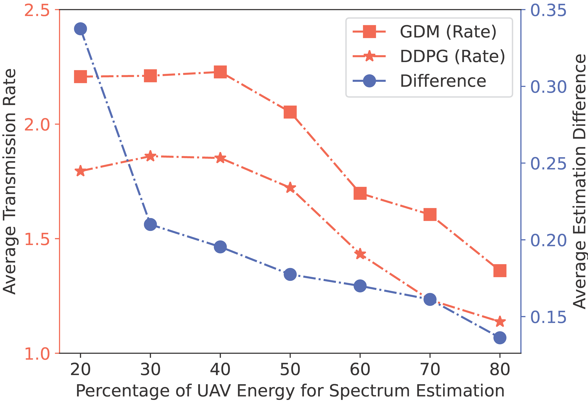

The Proposed Framework for UAV Spectrum Estimation.
Our proposed framework consists of two parts.
Part A illustrates the GDM training scenario when an expert database is accessible. The process learns from the GDM applications in the image domain: the optimal solution is retrieved from the expert database upon observing an environmental condition, followed by the GDM learning to replicate this optimal solution through forward diffusion and reverse denoising process.
Part B presents the scenario where no expert database exists. In this case, GDM, with the assistance of a jointly trained solution evaluation network, learns to generate the optimal solution for a given environmental condition by actively exploring the unknown environment.

This figure demonstrates the performance of our proposed framework for UAV spectrum estimation.
